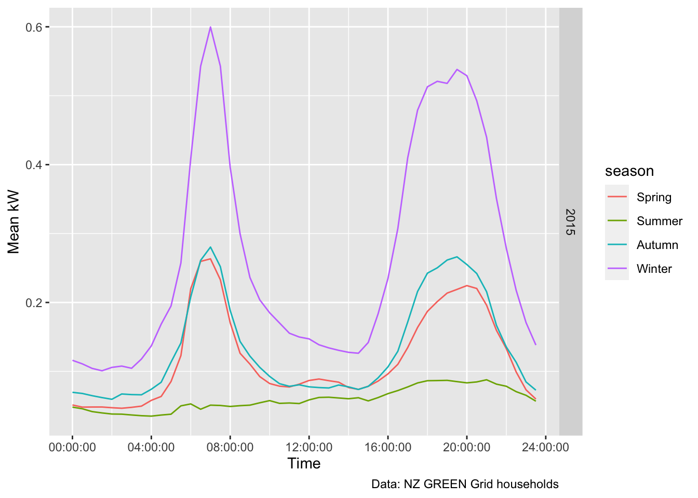
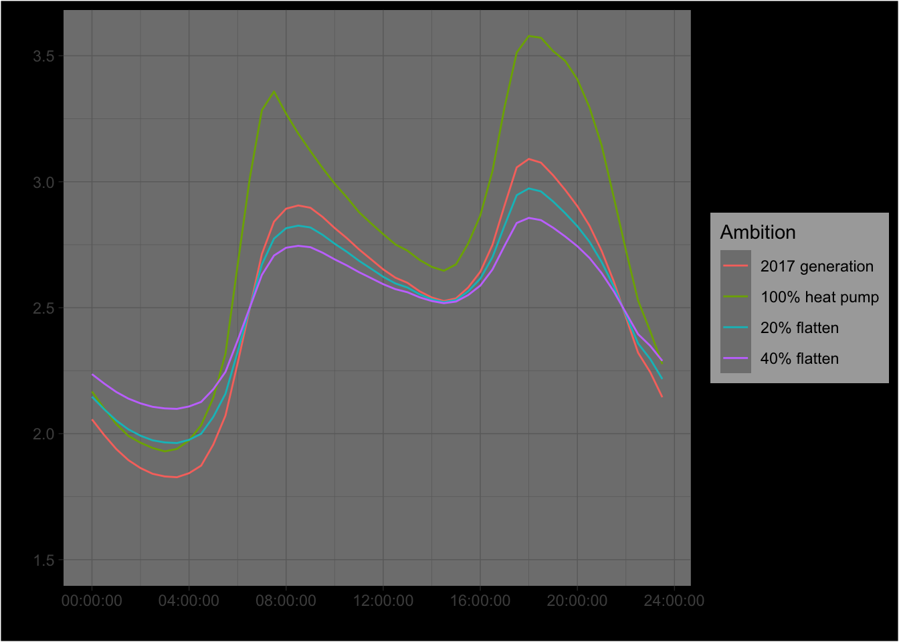

Create an animation of a simulation of flattening peak.
We use GREEN Grid heat pump data to calculate the mean kW per half hour.
## r_dateTime r_dateTimeLubridated rDateTimeNZT halfHour
## 1: 2015-04-01T00:00:00Z 2015-04-01 00:00:00 2015-04-01 13:00:00 13:00:00
## 2: 2015-04-01T00:01:00Z 2015-04-01 00:01:00 2015-04-01 13:01:00 13:00:00
## 3: 2015-04-01T00:02:00Z 2015-04-01 00:02:00 2015-04-01 13:02:00 13:00:00
## 4: 2015-04-01T00:03:00Z 2015-04-01 00:03:00 2015-04-01 13:03:00 13:00:00
## 5: 2015-04-01T00:04:00Z 2015-04-01 00:04:00 2015-04-01 13:04:00 13:00:00
## 6: 2015-04-01T00:05:00Z 2015-04-01 00:05:00 2015-04-01 13:05:00 13:00:00## halfHour minTime maxTime
## 1: 00:00:00 00:00:00 00:29:00
## 2: 00:30:00 00:30:00 00:59:00
## 3: 01:00:00 01:00:00 01:29:00
## 4: 01:30:00 01:30:00 01:59:00
## 5: 02:00:00 02:00:00 02:29:00
## 6: 02:30:00 02:30:00 02:59:00
## 7: 03:00:00 03:00:00 03:29:00
## 8: 03:30:00 03:30:00 03:59:00
## 9: 04:00:00 04:00:00 04:29:00
## 10: 04:30:00 04:30:00 04:59:00
## 11: 05:00:00 05:00:00 05:29:00
## 12: 05:30:00 05:30:00 05:59:00
## 13: 06:00:00 06:00:00 06:29:00
## 14: 06:30:00 06:30:00 06:59:00
## 15: 07:00:00 07:00:00 07:29:00
## 16: 07:30:00 07:30:00 07:59:00
## 17: 08:00:00 08:00:00 08:29:00
## 18: 08:30:00 08:30:00 08:59:00
## 19: 09:00:00 09:00:00 09:29:00
## 20: 09:30:00 09:30:00 09:59:00
## 21: 10:00:00 10:00:00 10:29:00
## 22: 10:30:00 10:30:00 10:59:00
## 23: 11:00:00 11:00:00 11:29:00
## 24: 11:30:00 11:30:00 11:59:00
## 25: 12:00:00 12:00:00 12:29:00
## 26: 12:30:00 12:30:00 12:59:00
## 27: 13:00:00 13:00:00 13:29:00
## 28: 13:30:00 13:30:00 13:59:00
## 29: 14:00:00 14:00:00 14:29:00
## 30: 14:30:00 14:30:00 14:59:00
## 31: 15:00:00 15:00:00 15:29:00
## 32: 15:30:00 15:30:00 15:59:00
## 33: 16:00:00 16:00:00 16:29:00
## 34: 16:30:00 16:30:00 16:59:00
## 35: 17:00:00 17:00:00 17:29:00
## 36: 17:30:00 17:30:00 17:59:00
## 37: 18:00:00 18:00:00 18:29:00
## 38: 18:30:00 18:30:00 18:59:00
## 39: 19:00:00 19:00:00 19:29:00
## 40: 19:30:00 19:30:00 19:59:00
## 41: 20:00:00 20:00:00 20:29:00
## 42: 20:30:00 20:30:00 20:59:00
## 43: 21:00:00 21:00:00 21:29:00
## 44: 21:30:00 21:30:00 21:59:00
## 45: 22:00:00 22:00:00 22:29:00
## 46: 22:30:00 22:30:00 22:59:00
## 47: 23:00:00 23:00:00 23:29:00
## 48: 23:30:00 23:30:00 23:59:00
## halfHour minTime maxTime
which suggests ~0.6 kW power in the morning peak and 0.5 in the evening. Perhaps people light woodburners in the evening?
BRANZ HCS 2015: * 40% owner-occupiers have HPs * 25% rentals
NZ Census: * 64% X m owner-occupied -> 1,228,500 * 32% Y m rentals -> 609,700 * 4% (?) rent-free -> 65,200 (we treat these as owned)
First we inflate it by adding 1 kW heat pump per house - which we assume needs 0.5 kWh per half hour. For 2 million households. That +1 GWh :-)
Another simulation
## Saving 7 x 5 in image## Saving 7 x 5 in image## Saving 7 x 5 in image
## Saving 7 x 5 in image## Saving 7 x 5 in image## Saving 7 x 5 in imageAnalysis completed in 48.39 seconds ( 0.81 minutes) using knitr in RStudio with R version 3.6.3 (2020-02-29) running on x86_64-apple-darwin15.6.0.
## R version 3.6.3 (2020-02-29)
## Platform: x86_64-apple-darwin15.6.0 (64-bit)
## Running under: macOS Catalina 10.15.5
##
## Matrix products: default
## BLAS: /System/Library/Frameworks/Accelerate.framework/Versions/A/Frameworks/vecLib.framework/Versions/A/libBLAS.dylib
## LAPACK: /Library/Frameworks/R.framework/Versions/3.6/Resources/lib/libRlapack.dylib
##
## locale:
## [1] en_NZ.UTF-8/en_NZ.UTF-8/en_NZ.UTF-8/C/en_NZ.UTF-8/en_NZ.UTF-8
##
## attached base packages:
## [1] stats graphics grDevices utils datasets methods base
##
## other attached packages:
## [1] lubridate_1.7.4 kableExtra_1.1.0 ggplot2_3.3.0 skimr_2.1 drake_7.11.0
## [6] data.table_1.12.8 here_0.1 gridCarbon_0.1.0
##
## loaded via a namespace (and not attached):
## [1] Rcpp_1.0.4 txtq_0.2.0 lattice_0.20-40 prettyunits_1.1.1 zoo_1.8-7
## [6] assertthat_0.2.1 rprojroot_1.3-2 digest_0.6.25 packrat_0.5.0 utf8_1.1.4
## [11] R6_2.4.1 repr_1.1.0 backports_1.1.5 evaluate_0.14 httr_1.4.1
## [16] pillar_1.4.3 rlang_0.4.5 progress_1.2.2 rstudioapi_0.11 rmarkdown_2.1
## [21] labeling_0.3 webshot_0.5.2 readr_1.3.1 stringr_1.4.0 igraph_1.2.5
## [26] munsell_0.5.0 compiler_3.6.3 xfun_0.12 pkgconfig_2.0.3 base64enc_0.1-3
## [31] htmltools_0.4.0 tidyselect_1.0.0 tibble_2.1.3 bookdown_0.18 fansi_0.4.1
## [36] viridisLite_0.3.0 crayon_1.3.4 dplyr_0.8.5 withr_2.1.2 grid_3.6.3
## [41] jsonlite_1.6.1 gtable_0.3.0 lifecycle_0.2.0 magrittr_1.5 storr_1.2.1
## [46] scales_1.1.0 cli_2.0.2 stringi_1.4.6 farver_2.0.3 xml2_1.2.5
## [51] filelock_1.0.2 vctrs_0.2.4 tools_3.6.3 forcats_0.5.0 glue_1.3.2
## [56] purrr_0.3.3 hms_0.5.3 parallel_3.6.3 yaml_2.2.1 colorspace_1.4-1
## [61] base64url_1.4 rvest_0.3.5 knitr_1.28Allaire, JJ, Yihui Xie, Jonathan McPherson, Javier Luraschi, Kevin Ushey, Aron Atkins, Hadley Wickham, Joe Cheng, and Winston Chang. 2018. Rmarkdown: Dynamic Documents for R. https://CRAN.R-project.org/package=rmarkdown.
Dowle, M, A Srinivasan, T Short, S Lianoglou with contributions from R Saporta, and E Antonyan. 2015. Data.table: Extension of Data.frame. https://CRAN.R-project.org/package=data.table.
Grolemund, Garrett, and Hadley Wickham. 2011. “Dates and Times Made Easy with lubridate.” Journal of Statistical Software 40 (3): 1–25. http://www.jstatsoft.org/v40/i03/.
R Core Team. 2016. R: A Language and Environment for Statistical Computing. Vienna, Austria: R Foundation for Statistical Computing. https://www.R-project.org/.
Wickham, Hadley. 2009. Ggplot2: Elegant Graphics for Data Analysis. Springer-Verlag New York. http://ggplot2.org.
Xie, Yihui. 2016a. Bookdown: Authoring Books and Technical Documents with R Markdown. Boca Raton, Florida: Chapman; Hall/CRC. https://github.com/rstudio/bookdown.
———. 2016b. Knitr: A General-Purpose Package for Dynamic Report Generation in R. https://CRAN.R-project.org/package=knitr.
Zhu, Hao. 2018. KableExtra: Construct Complex Table with ’Kable’ and Pipe Syntax. https://CRAN.R-project.org/package=kableExtra.